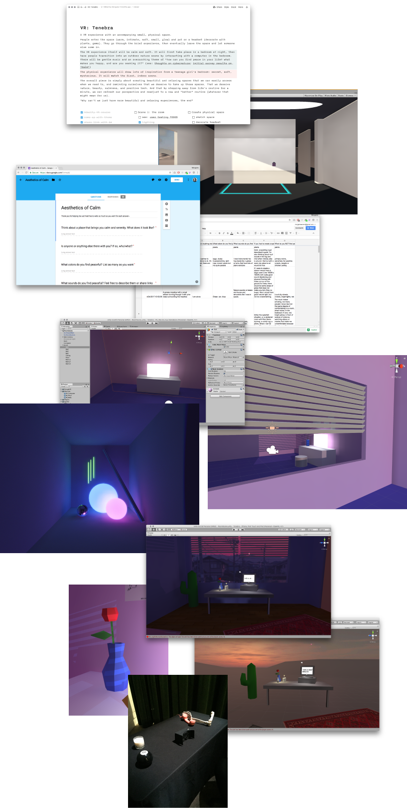

Tenebra
a Google Cardboard experience by Lola

I participated in Gray Area's incubator program where I spent several months designing and developing a Google Cardboard experience in Unity. I did all the design, asset creation, and coding myself, with guidance from the mentors in the program. At the end of the program I demoed my project to the public at the incubator showcase.
The work explores themes of girlhood, magic, how computers used to feel, and getting lost in your own world. Throughout the process I ran user research sessions and learned about 3D modeling and how to use Unity.
